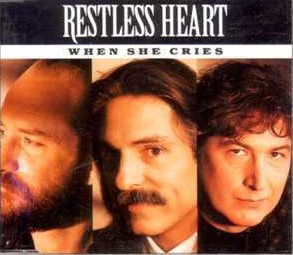

When She Cries
Song by Restless Heart ‧ 1992
original video

Lyrics
The road I have traveled on
Is paved with good intentions
It's littered with broken dreams
That never quite came true
When all of my hopes were dying
Her love kept me trying
She does her best to hide
The pain that she's been through
When she cries (she cries) at night (at night)
And she doesn't think that I can hear her
She tries (she tries) to hide (to hide)
All the fears she feels inside
So I pray (I pray) this time (this time)
I can be the man that she deserves
'Cause I die a little each time
When she cries
She's always been there for me
Whenever I've fallen
When nobody else believes
She'll be there by my side
I don't know how she takes it
Just once I'd like to make it
Then there'll be tears of joy
That fill her loving eyes
When she cries (she cries) at night (at night)
And she doesn't think that I can hear her
She tries (she tries) to hide (to hide)
All the fears she feels inside
So I pray (I pray) this time (this time)
I can be the man that she deserves
'Cause I die a little each time
When she cries
So I pray this time (this time)
I can be the man that she deserves
'Cause I die a little each time
When she cries